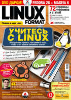

|  |
Подписка на журнал Linux Format 2018
Linux Format - первый в России ежемесячный журнал, посвященный исключительно Linux и Open Source.
Цель журнала Linux Format - информирование читателей о состоянии индустрии свободного программного обеспечения, публикация обзоров о технологических новинках и обучающих программах, новостей и интервью, описаний внедрений GNU/Linux в российских компаниях.
|